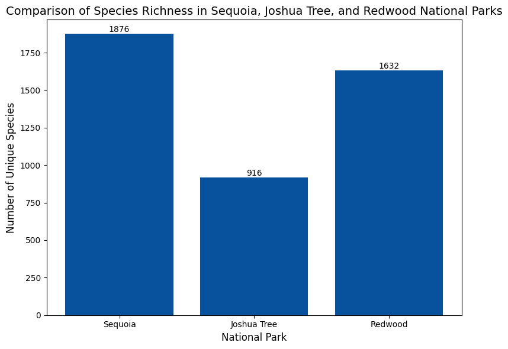

About California'a Diverse Species
This page highlights the vast biodiversity in the 3 selected national parks: Joshua Tree, Sequoia/Kings Canyon, and Redwood National Parks. Below is a look at ... [FINISH THIS]

This bar chart’s data is categorized into six groups: amphibian, bird, fish, mammal, reptile, and vascular plant. It’s evident through this visualization that the Vascular Plant category dominates the rest of the graph. It has the largest number of species across all three parks, with the vascular plant family having over 1400 unique species in Sequoia and Kings Canyon National Park. The bird family is the next most populated, with all three parks having comparable numbers. In addition, the Amphibian family has the smallest number of unique species across all 3 parks with values that are all near 0. Consequently, these results make it clear that there is a low amphibian population across California. Similarly, fish and reptile populations also have low counts with similar distributions for all three parks. However, the fish category has an interesting distribution as the fish in Redwood National Park being the outlier in the fish category with around 200 unique species. As Sequoia National Park has little to no fish, while Joshua Tree National Park has no fish.
Vouchers and References

This boxplot visualization displays the combined counts of vouchers and references across various categories in the three national parks. The visualization highlights variations in species documentation across parks and categories. The boxplot also has zero outliers because they may indicate gaps in species surveys or a lack of physical evidence for certain species in the parks. These gaps indicate the importance of expanding documentation efforts, especially in categories with low representation. By analyzing the distribution of vouchers and references, park managers can identify underrepresented species groups and prioritize the future research or conservation efforts to ensure comprehensive biodiversity records.
species family
This plot visualizes a high level
species richnes by abundance

This bar chart’s data is categorized into abundant, common, occasional, rare, uncommon, and unknown. The common category is the only category with all 3 national parks having over 200 unique species. For the uncommon category, the graph reaches its peak, as Sequoia and Kings National Park has the most with over 800 unique species. In addition, Redwood National Park has an interestingly high amount of unknown unique species, as it doesn’t know the abundance of over 400 unique species. The low amount of values for all 3 national parks in the abundant category indicates that there aren't many species that are common and abundant everywhere.